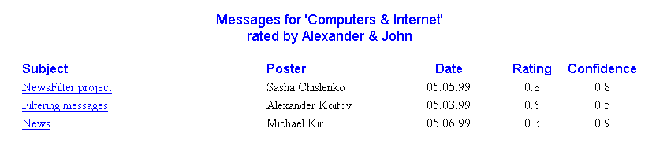
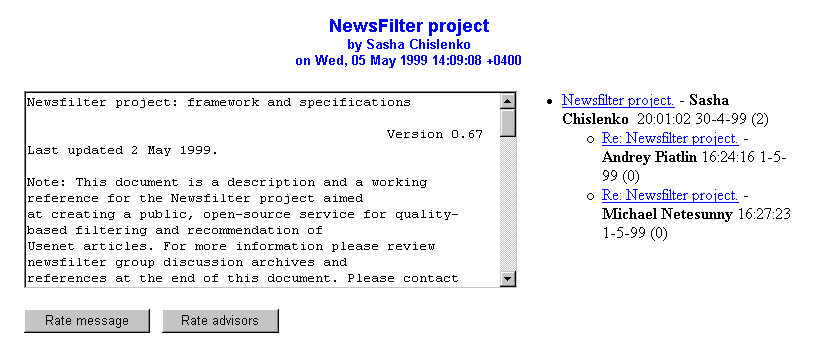

Message browsing facility (MBF)
|  | |
| MBF presents a list of message headers that correspond to a selected area of interest and a set of advisors. This list is sorted according to an aggregated rating gained from a set of advisors. Confidence is a calculated value that shows how much a user should trust an aggregated rating. | |
By clicking on a message header a user will be presented a message body. On this page user will also see a tree of replies and two buttons: ‘Rate message’ and ‘Rate advisor’. Clicking on any of these buttons will take a user to a Rate facility. |
|
|  | |